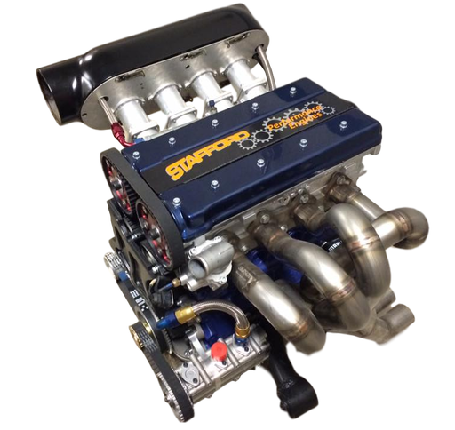
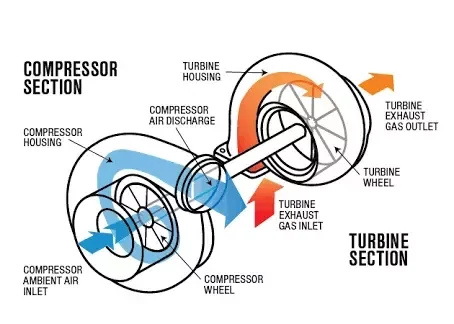

Internal Combustion Engines
Internal combustin engines turns the energy of specific gasses into mechanical energy by burning them in the process. Below you can see the engine of Opel Vectra B with 1598 cc displacement named X16XEL (optimized for low-end torque)
There are wide range of IC Engines types. Some of them are listed below:
- Turbocharged
- Naturally Aspirated
- Supercharged
- Procharged
- Electrocharged
- NO2 charged
The different engine types listed above by their induction methodes. Turbocharged and Naturally aspirated engines are the most popular and widely used. Lets expalin both of them;
Turbocharged
Turbocharged engines are aspirated by specific turbines which consists of 2 turbine blades which are spining at thousands of RPM using exhaust gas pressure and forcing clean air into the combustion chambers at higher than atmospheric pressure around 1-4 Bars.
Naturally Aspirated
Natually Aspirated engines are apirated using atmospheric pressure of the natural environment. Moving pistons dragging air through an intake manifold into combustion chamber at intake stroke.